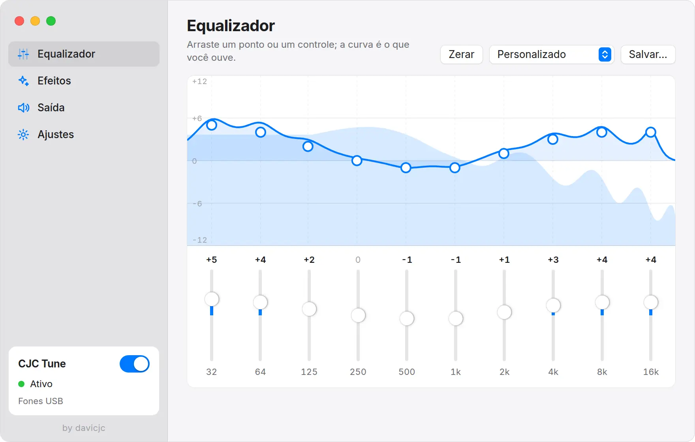

Equalizador para Linux Mint
O Mint não tem equalizador de sistema. Veja como colocar um em poucos cliques.

No Linux Mint, o applet de som controla volume e saída, mas não tem equalizador. O CJC Tune resolve isso para o sistema inteiro: navegador, Spotify, jogos e chamadas passam por ele antes de chegar ao fone ou à caixa de som.
Ele foi feito e é usado no Linux Mint 22 com Cinnamon, e funciona também no MATE e no XFCE. O Mint 22 usa PipeWire e o Mint 21 usa PulseAudio; o CJC Tune funciona com os dois.
Instalar
- Baixe o
cjc-tune_1.0.0_amd64.deb. - Dê dois cliques no arquivo e confirme no instalador de pacotes, ou rode
sudo apt install ./cjc-tune_1.0.0_amd64.debno terminal. - Abra o CJC Tune pelo menu. O ícone fica na bandeja do painel.
Deixar abrindo junto com o sistema
Em Ajustes, ligue Abrir ao iniciar a sessão e, se quiser, Iniciar escondido na bandeja. Assim o seu equalizador está sempre valendo, sem janela aberta.
Dicas para o Mint
- Se você trocar de fone pelo applet de som, o CJC Tune vai junto para o aparelho novo.
- Deixe o volume do sistema em até 100%. Passar disso distorce antes do equalizador.
- Se o som sumir depois de suspender o PC, use Reiniciar serviço de áudio no ícone da bandeja.
Outros guias
- Equalizador para UbuntuInstale um equalizador que vale para tudo o que toca no Ubuntu, em dois minutos.
- Equalizador para PipeWire e PulseAudioO que acontece por baixo e como escolher entre o CJC Tune e o EasyEffects.
- Alternativa ao FxSound no LinuxO FxSound é só para Windows. Veja como ter os mesmos efeitos no Linux.
- Como aumentar o grave do fone no LinuxQuais bandas subir, quanto, e como evitar que o som estoure.